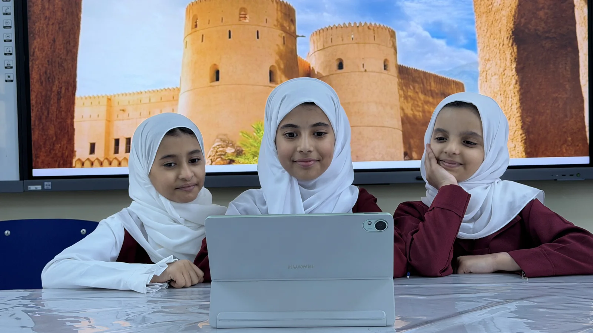

تعذّر تحميل بيانات المحتوى. تأكد من الاتصال ثم أعد المحاولة.
عُمان، تُكتشف.
موارد تعليمية تفتح أبواب المعرفة العُمانية.
من قلب المدرسة
لحظات من التعلّم
جرّب حِرف عُمان بنفسك
حرّك بيدك، وراقب أثر قراراتك.
اختر ما يلهمك
أبواب المعرفة
ثمانية أبواب للمعرفة والمشاركة.
عن الموسوعة
حكايةُ عُمان،
في مرجعٍ واحد.

مرجع ثقافي وطني يوثّق الإنسان العُماني وأرضه؛ من التاريخ والمجتمع إلى الطبيعة. دُشّنت الموسوعة عام 2014، بمداخل مرتّبة أبجديًا وخرائط وصور ورسوم.
رحلة الموسوعة
تبنّت وزارة التراث والثقافة المشروع. بدأ الإعداد عام 2004، ثم جرت الكتابة والتحرير بين عامي 2006 و2013، قبل التدشين في معرض مسقط الدولي للكتاب. وفي عام 2024 صدرت الموسوعة العُمانية للناشئة بمحتوى وتصميم ملائمين للفئة العمرية، ومراجعة علمية ولغوية ومواد بصرية.
تعلّم. ثم شارك.
فكرة بسيطة تبدأ بمورد، وتكبر بمشاركة الطلاب.
أحدث الموارد
كل المواردكيف تُصنع؟ · المعرفة بين يديك
ورشة الحِرف
اختر حرفة، وجرّبها بنفسك. لكل قرار أثر، ولكل تجربة حكاية.
صناعة الحلوى العُمانية
أضف، وحرّك، وقدّم في ثلاث خطوات.
ادخل التجربة ←استخراج اللبان العُماني
انقش برفق، وانتظر، ثم اجمع اللبان.
ادخل التجربة ←محاكاة تعليمية داخل الموقع، مع مصادر المعلومات وحدود كل نموذج. لا تتطلب تنزيلًا.
الحلوى العُمانية
جارٍ تجهيز مساحة التجربة…
استخراج اللبان العُماني
جارٍ تجهيز مساحة التجربة…
رحلة عام في عُمان
عُمان لا تتوقف
عن الحكاية.
اثنا عشر فصلًا، وخطوة تفتح المشهد التالي.
امشِ مع الحكايةمرّر لتتابع · استخدم ↑ و↓ للتنقل بين الفصول · اختر «قراءة هادئة» لعرضها متتابعة.
كل نهاية، باب آخر
اكتشف المزيد
في الموسوعة.
تابع من مشهدٍ أحببته إلى موردٍ تتعلّم منه.
افتح أبواب المعرفة ←إلى المكتبة المرئية ←الصور ومصادرها
مصادر صور الرحلة
صور فوتوغرافية حقيقية محفوظة داخل الموقع. ترد أدناه أسماء المصورين وروابط الصور الأصلية وتراخيصها؛ لا يعني استخدامها تأييد المصور للموقع.
تنزيل سجل مصادر الصورسيُضاف المحتوى قريبًا
نعمل على تجهيز موارد هذا القسم. عُد إلينا قريبًا لاكتشاف الجديد.